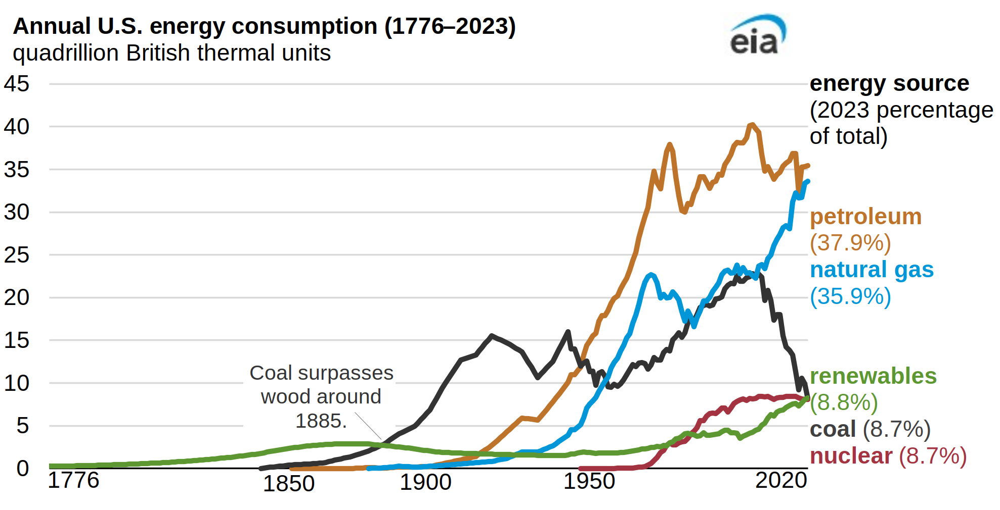
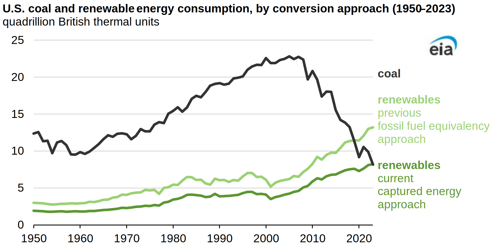
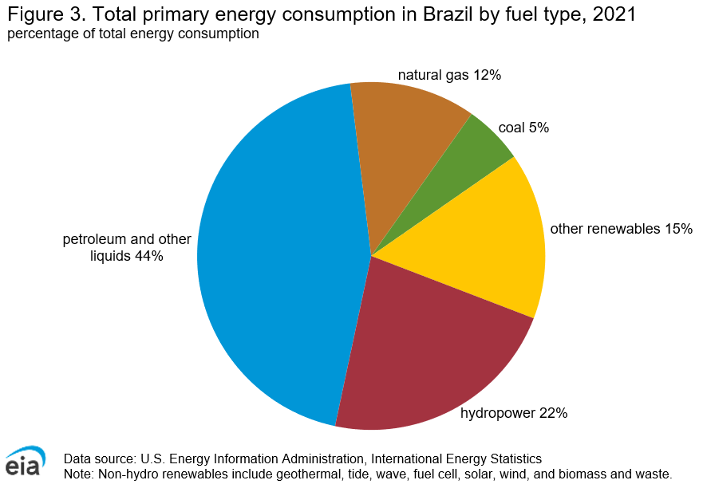
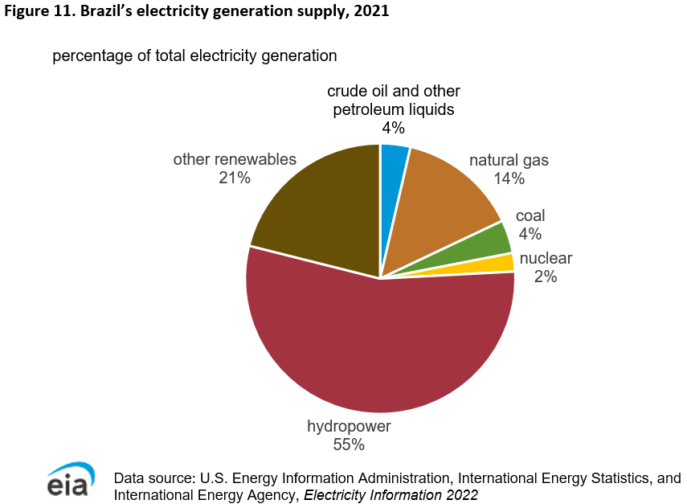
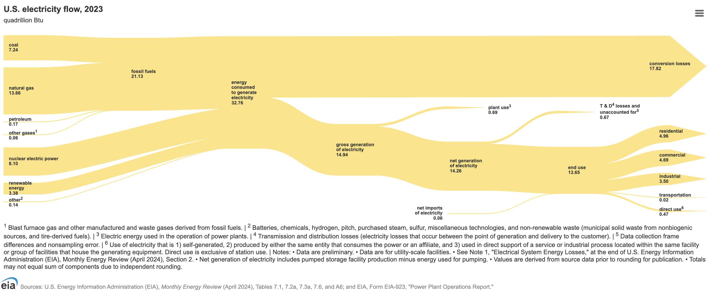

Lecture 7 Energy Transition and Power Sector Decarbonization
October 27, 2025
Sample analytic questions
- What are the drivers of energy transition?
- How should each country think/design/implement its energy transition?
- How to frame the role of different technologies in energy transition?
- How geo-politics, wars, and pandemic impact the energy in transiton?
Transition history
Source: EIA
RE > coal: a milestone
Source: EIA
U.S. power-sector half-way to zero

Source: LBL
{kind=link}
Soft path vs. hard path

Central, large scale, incresing supply/demand
Fossil, nuclear
Flexible, resilient, sustainable, and benign
Renewable energy, energy efficiency, matching in scale and quality to the end use need
Source: Lovins (1976)
Drivers of energy transition
- Demand
- Supply
- Climate change
- Environmental pollution
- Energy security
- Economics
100% reneables: a debate
100% renewables (wind, water, solar) for all purposes?
- Resources, technology, economic ready
- Huge benefits
100% renewable not viable/necesssary?
- Modeling errors
- Implausible assumptions
- Need better modeling
Energy transition is difficult, broad technology portfolio is needed
Changing perspectives of renewables

Source: IPCC
Energy Transition: The German Energiewende
- Fighting climate change
- Reducing energy imports
- Stimulating technology innovation and the green economy
- Reducing and eliminating the risks of nuclear power
- Energy security
- Strengthening local economies and providing social justice
Germany: role of nuclear?
Three operating plants, total capacity 4055MW, in 2022, scheduled to shut down by end of 2022, and were extended to 2024.
Source: World Nuclear Association
The U.S.: net zero America

Source: ZERO Lab
U.S.: IRA

Source: Rhodium Group
Denmark: Distributed generation (CHP and wind)

Source: Henning Parbo
China: the scale and scope

Source: The Economist
China: phasing out coal


Phasing out coal yields huge (water savings, avoided pre-matual death, and health) co-benefits, however, need to address employment impact and welfare redistribution
Bazil: role of hydro and biofuel


Source: EIA
Africa: the fogotten billion

Source: Mulugetta et al. (2022)
Summary
- Diverse factors that drive energy transition
- Common and differentiated solutions to energy
- Leverage the advantages
- Addressing uncertainties: geopolitics, wars, pandemic, and more
Sample power system transition analytic questions
- How much solar and wind capacity need to be built?
- How cost delince of renewables and storage will change the capacity and generation mix of the power sector?
- How much new transmission capacity is needed to harvest the benefits of interconnection?
- Does CCS has role to play in the power sector decarbonization?
Power sector’s central role
Overarching strategy
- Electrification
- Decarbonization
Why power sector is special?
- Essential good
- Infrastructure
- Technology/network complexity: balance on real-time
- Supply/Demand inelasticity
- Capital intensive
- Investment takes time
- Capital intensive
U.S. electricity flow
Source: EIA
U.S. transmission grid
Source: ArcGIS
Refresh the basics
- Energy and power
- kW, MW, GW, TW
- Heat rate and efficiency (Carnot, 1st, 2nd)
- Thermodynamics
Load factor and load curves
\(LF=\frac{Energy\ consumed}{Energy\ at\ peak\ demand}=\frac{Average\ power}{Peak\ power\ demand}\)
A low load factor means a “peaky” load shape

Source: Masters (2013)
Supply curve and dispatch

Read more: EIA
Power system modeling family
| Type | Production Cost (Unit Commitment and Dispatch) | Network Reliability (AC Power Flow, Dynamics) | Capacity Expansion |
|---|---|---|---|
| Generator Adequacy | Yes | No | Often |
| Flexibility Requirement | Yes | No | Somewhat |
| Transmission Adequacy | Partially | Yes | Typically No |
| Gen Contingencies | Somewhat | Yes | No |
| Transmission Contingencies | Somewhat | Yes | No |
| Frequency Stability | Somewhat | Yes | No |
| Voltage Stability, Voltage control | No | Yes | No |
| Examples | PROMOD, GE-Maps, PLEXOS, GridView | Positive sequence load flow (PSLF), power system simulator for engineering (PSSE) | NEMS, ReEDS, SWITCH, Grid-path, GenX, PyPSA, Haiku |
Capacity expansion models
- Capacity expansion models simulate generation and transmission capacity investment, given assumptions about future electricity demand, fuel prices, technology cost and performance, and policy and regulation
- What mix of generators should we build to meet load?
- Does a policy affect cost of service regions and competitive regions in different ways?
Strength and limits
- Strength: Examine the impacts of power sector policies (or alternative technology/fuel trajectories) on the generation and capacity mix in the mid-to long-term
- Limits: Many do not have chronological unit commitment (i.e., every hour of the year chronologically); some use aggregate (model) plants for dispatch; transmission and power flow are a stylized representation (transport or DC)
- Example questions: Quantifying the impacts of environmental policies on generation and capacity? What are the cost implications of alternative pathways to a low greenhouse gas emissions future? How will alternative future prices of natural gas impact capacity investment? What is the change in consumption and expenditures? What are the efficiency and distributional effects of various policy designs?
SWITCH Model as an example

Source: Johnston et al. (2019)
Typical output: capacity/generation mix

Source: He, Lin, Sifuentes, et al. (2020)
Typical output: transmission expansions

Read more: PyPSA
Unit committment and network reliability
- Unit Commitment Model: Simulate detailed (hourly to sub-hourly) operation of a given system; Assess resource adequacy and other aspects of reliability of a system; Analyze the impact of changes in the system (e.g., retirement/addition of capacity) on system operation; Assess transmission congestion and locational marginal prices; Describe the daily pattern of emissions
- Network Reliability Model: Detailed simulations of the transmission network including dynamic events that can occur in seconds (and cause big problems); these models aren’t run on a day to day basis –they are only run to examine significant changes to an existing system
Emerging trends
- Smart grid
- Distributed generation
- Renewable penetration
- Efficiency improvement
- Electrifying
- DR/DSM
Summary
- Power sector’s central role in decarbonization
- Capacity expansion model to analyze the optimized investment decisions
- Decisions in the real world is much more complicated
- Emerging trends in the power sector